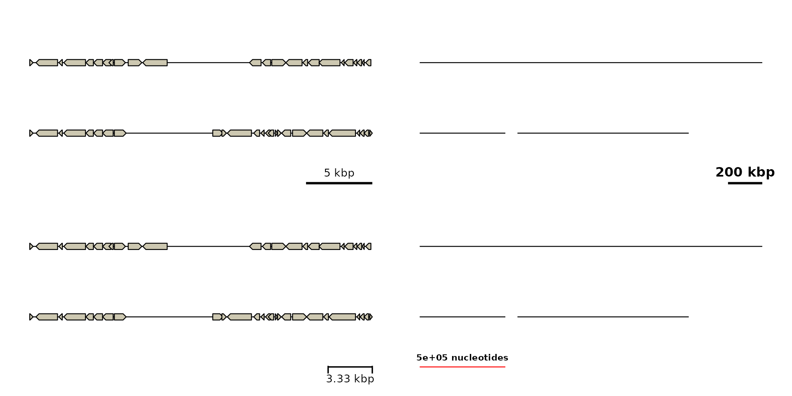
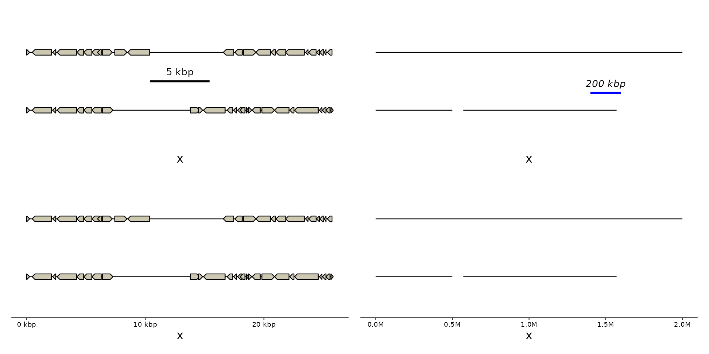
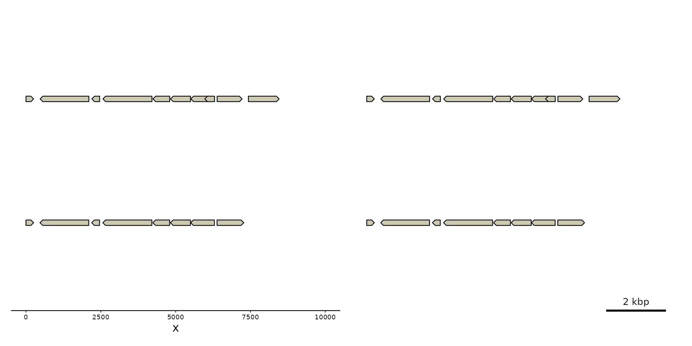

Add and customize genomic scalebars in gggenomes plots. axis_scalebar()
configures a scalebar along the plot axis, guide_scalebar() provides the
underlying ggplot2 guide, theme_scalebar() controls its appearance, and
geom_scalebar() draws a freely positioned scalebar inside the gggenomes
panel.
Usage
axis_scalebar(
length = 0.25,
label = NULL,
just = c("right", "center", "left"),
position = "bottom",
label_position = c("above", "below"),
linewidth = NULL,
color = NULL,
colour = NULL,
linetype = NULL,
lineend = NULL,
text_size = NULL,
text_color = NULL,
text_colour = NULL,
family = NULL,
fontface = NULL,
tick_height = NULL,
label_offset = NULL
)
guide_scalebar(
length = 0.25,
just = c("right", "center", "left"),
label = NULL,
label_position = c("above", "below"),
theme = NULL,
order = 0,
position = ggplot2::waiver()
)
theme_scalebar(
linewidth = NULL,
color = NULL,
colour = NULL,
linetype = NULL,
lineend = NULL,
text_size = NULL,
text_color = NULL,
text_colour = NULL,
family = NULL,
fontface = NULL,
tick_height = NULL,
label_offset = NULL
)
geom_scalebar(
mapping = NULL,
data = seqs(),
length = 0.25,
x = "right",
y = "bottom",
label = NULL,
label_position = c("above", "below"),
guide_x = "none",
linewidth = NULL,
color = NULL,
colour = NULL,
linetype = NULL,
lineend = NULL,
text_size = NULL,
text_color = NULL,
text_colour = NULL,
family = NULL,
fontface = NULL,
tick_height = NULL,
label_offset = NULL,
stat = "identity",
position = "identity",
na.rm = FALSE,
show.legend = FALSE,
inherit.aes = TRUE,
...
)Arguments
- length
Scalebar length. Values between 0 and 1 are interpreted as a target fraction of the displayed x range and rounded down to a nice 1/2/5 x 10^n value. Values >= 1 are interpreted as absolute x units.
- label
Optional label. By default, the scalebar length in bp/kb/Mb/Gb; Can be text or a function, which is called with the scalebar length.
- just
Horizontal placement within the scale: left, center, or right.
- position
Where this guide should be drawn: one of top, bottom, left, or right.
- label_position
Draw the label above or below the bar.
- linewidth, color, colour, linetype, lineend
Scalebar line/tick styling.
- text_size, text_color, text_colour, family, fontface
Scalebar label styling.
- tick_height
Total physical length of each centered end tick. Numeric values are interpreted as points.
- label_offset
Physical spacing between bar and label. Numeric values are interpreted as points.
- theme
A
themeobject to style the guide individually or differently from the plot's theme settings. Thethemeargument in the guide partially overrides, and is combined with, the plot's theme.- order
A positive
integerof length 1 that specifies the order of this guide among multiple guides. This controls in which order guides are merged if there are multiple guides for the same position. If 0 (default), the order is determined by a secret algorithm.- mapping
Set of aesthetic mappings created by
aes(). If specified andinherit.aes = TRUE(the default), it is combined with the default mapping at the top level of the plot. You must supplymappingif there is no plot mapping.- data
feat_layout: Uses first data frame stored in the
featstrack by default.- x, y
Scalebar coordinates. Values between 0 and 1 are interpreted as panel-relative, values >= 1 and < 0 as absolute coordinates. Also supports the keywords "right", "left", "bottom", "top" and "center".
xspecifies the scalebar center,ythe scalebar baseline.- guide_x
Overwrite for the x scale guide. Defaults to
"none"so the in-panel scalebar replaces the axis guide. UseNULLto leave the existing x guide untouched.- stat
The statistical transformation to use on the data for this layer. When using a
geom_*()function to construct a layer, thestatargument can be used to override the default coupling between geoms and stats. Thestatargument accepts the following:A
Statggproto subclass, for exampleStatCount.A string naming the stat. To give the stat as a string, strip the function name of the
stat_prefix. For example, to usestat_count(), give the stat as"count".For more information and other ways to specify the stat, see the layer stat documentation.
- na.rm
If
FALSE, the default, missing values are removed with a warning. IfTRUE, missing values are silently removed.- show.legend
logical. Should this layer be included in the legends?
NA, the default, includes if any aesthetics are mapped.FALSEnever includes, andTRUEalways includes. It can also be a named logical vector to finely select the aesthetics to display. To include legend keys for all levels, even when no data exists, useTRUE. IfNA, all levels are shown in legend, but unobserved levels are omitted.- inherit.aes
If
FALSE, overrides the default aesthetics, rather than combining with them. This is most useful for helper functions that define both data and aesthetics and shouldn't inherit behaviour from the default plot specification, e.g.annotation_borders().- ...
additional element specifications not part of base ggplot2. In general, these should also be defined in the
element treeargument. Splicing a list is also supported.
Value
a list with a ggplot2 guide and a ggplot theme object
a ggplot2 guide object
a ggplot2 theme object
Details
theme_scalebar() styles the dedicated gggenomes scalebar theme elements
used by guide_scalebar(). geom_scalebar() exposes matching styling
arguments directly because ggplot2 3.5.x does not pass the plot theme to
Geom$draw_panel().
Functions
axis_scalebar(): customize the axis scalebar, conveniently wrappingguide_scalebar()andtheme_scalebar()guide_scalebar(): create a scalebar guidetheme_scalebar(): update the axis scalebar themegeom_scalebar(): draw a flexible scalebar inside the gggenomes panel
Examples
# gggenomes' options for representing the x-axis scaling are:
library(patchwork) # to combine plots in same figure
# 1. The default `axis_scalebar` with short ...
p1 <- gggenomes(genes = emale_genes) |> pick(1:2) + # two short genomes
geom_seq() + geom_gene()
#> No seqs provided, inferring seqs from feats
#> ℹ Items outside plot detected
#> Some of your feats, genes or links are not plotted because they fall outside
#> your given sequence set. This is expected if you zoomed in or picked a subset
#> of sequences. But it could also indicate a data mismatch. So we show this note
#> once in a while. Examples of dropped items are:
#> 1 Cflag_017B Cflag_017B 538 867 emales + CDS
#> 2 Cflag_017B Cflag_017B 1215 1634 emales + CDS
#> 3 Cflag_017B Cflag_017B 2129 3667 emales - CDS
#> This message is displayed once every 8 hours.
# ... and with long sequences; some simple styling ...
s0 <- tibble::tibble(
seq_id = c("a", "b", "b"),
length = c(2000000, 500000, 1000000))
q0 <- gggenomes(seqs = s0) + geom_seq()
q1 <- q0 + axis_scalebar(length = 0.1, fontface = "bold")
# ... or more advanced styling, ...
p2 <- p1 + axis_scalebar(length = 3333, label_position = "below",
linewidth = 0.6, tick_height = c(1,6))
# ... down to theme and guide customization
q2 <- q1 +
theme_scalebar(text_size = 8, color = "red") +
guides(
x = guide_scalebar(just = "left", label = \(x){paste(x, "nucleotides")}))
p1 + q1 + p2 + q2 + plot_layout(ncol=2)

# 2. The optional `geom_scalebar` with easy relative ...
p3 <- p1 + geom_scalebar(x = "center", y = 0.5)
# ... and absolute placement anywhere in the plot area
q3 <- q1 + geom_scalebar(length = 0.1, x = 1.5e6, y = 1.3, color = "blue",
fontface = "italic")
# 3. Or also a regular axis with genomic units...
p4 <- p1 + guides(x = "axis")
# ... which can be further customized
q4 <- q0 + scale_x_genomic(guide = "axis", unit = "", sep = "")
#> Scale for x is already present.
#> Adding another scale for x, which will replace the existing scale.
p3 + q3 + p4 + q4 + plot_layout(ncol=2)

# Note: `xlim()` or scale_x_continuous()` will overwrite the genomic scale
p1 + xlim(c(0, 1e4)) +
# Use `scale_x_genomic(limits=)` to prevent that
p1 + scale_x_genomic(limits=c(0, 1e4))
#> Scale for x is already present.
#> Adding another scale for x, which will replace the existing scale.
#> Scale for x is already present.
#> Adding another scale for x, which will replace the existing scale.
#> Warning: Removed 2 rows containing missing values or values outside the scale range
#> (`geom_segment()`).
#> Warning: Removed 32 rows containing missing values or values outside the scale range
#> (`geom_gene()`).
#> Warning: Removed 2 rows containing missing values or values outside the scale range
#> (`geom_segment()`).
#> Warning: Removed 32 rows containing missing values or values outside the scale range
#> (`geom_gene()`).
